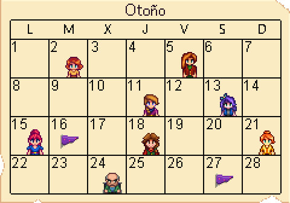

Es un juego indie de simulación de granja desarrollado por Eric Barone, mejor conocido como "ConcernedApe". En Stardew Valley, el jugador toma el rol de un personaje que atrapado en su trabajo de oficina, decide mudarse a la granja abandonada de su abuelo. La misión principal del protagonista será reconstruir la granja y convertirse en parte de la comunidad del Pueblo Pelícano, lugar donde se desarrolla esta historia.
¿Querés saber mas? Mirá el video y seguí leyendo...
Plataformas disponibles
Aunque el juego fue pensado inicialmente para PC y la jugabilidad en esta es mejor, también lo encontraremos disponible en:
- Dispositivos móviles (Android, iOS).
- Consolas (PlayStation, Xbox).
- Nintendo Switch.
Requerimientos mínimos y recomendados para computadoras
- Sistema operativo: Windows 10
- Arquitectura: x64
- Memoria: 1GB (Mínimo), 2GB (Recomendado)
- Memoria de video: 1GB (Mínimo), 2GB (Recomendado)
Las estaciones
El juego se rige por días y estaciones. Cada estación contiene 28 días y variarán no solo los cultivos que podemos plantar en nuestra granja, sino también los eventos que se dan en el pueblo. A continuación, podemos ver un ejemplo del calendario, el cual marca los cumpleaños de los aldeanos y las distintas actividades que se desarrollarán en el mes.
Las habilidades
Las habilidades son las estadísticas de nuestro personaje en Stardew Valley que podemos maximizar para darnos ventajas en una labor o otra. Éstas aumentan de distintas maneras cada una, llegando a un nivel máximo de 10.
- Cultivo: engloba a todo lo que es cultivos, artesanía y productos animales como sus derivados, aumentar su nivel mejora la capacidad de tu Regadera y la eficiencia de tu Azada.
- Minería: Esta habilidad aumentara nuestra eficiencia con nuestro pico. Mientras subamos de nivel desbloquearemos creaciones relacionadas con la minería. Para subir de nivel en esta característica tendremos que hacer acciones relacionadas con Minar.
- Recolección: Esta habilidad aumentara nuestra eficiencia con nuestra hacha. Mientras subamos de nivel desbloquearemos creaciones relacionadas con la recolección. Para subir de nivel en esta característica tendremos que hacer acciones de recolección.
- Pesca: Esta habilidad aumentara nuestra eficiencia con nuestra caña de pescar. Mientras subamos de nivel desbloquearemos creaciones relacionadas con la pesca. Para subir de nivel en esta característica tendremos que hacer acciones de pesca.
- Combate: Esta habilidad aumentara nuestros puntos de salud. Mientras subamos de nivel desbloquearemos creaciones relacionadas con el combate. Para subir de nivel en esta característica tendremos que combatir en las minas.
Todas estas habilidades son necesarias para desbloquear el Centro Cívico. Para mas información, ingresar en la sección "Consejos".